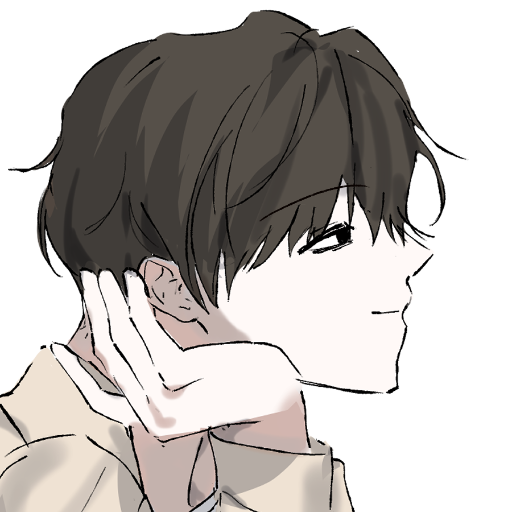
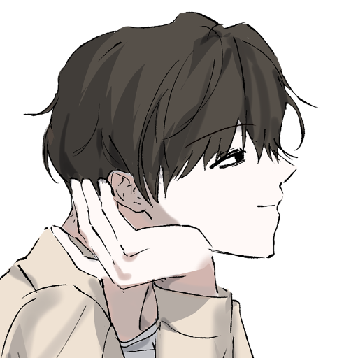

무엇도 보이지 않습니다.
오로지 당신 뿐입니다.
…
아. 그래요. 당신.
당신이 있고...
고개를 올려보면, 드디어 다른 색이 보여요.
검은 색의, 저건, 글자인가요?
너무 먼 탓인지 흐릿하게만 보입니다.

월광:
| 기준치: | 50/25/10 |
| 굴림: | 48 |
| 판정결과: | 보통 성공 |
■■는 당신을 ■■하고 있습니다.
세찬 바람이 불어오는 소리가 들렸을까요.
눈을 깜빡이면...
어느순간 당신 앞에 세계가 펼쳐집니다.
이곳은 당신의 거처.
당신은 방의 한 가운데서 악몽이라도 꾼 사람처럼, 숨을 몰아쉬며 서 있습니다.
무슨 꿈이었나요?
좋은 아침이네요, 월광.
경쾌한 피아노 소리가 들려옵니다.
월광:뭐, 뭐야?! (화들짝 놀라며 일어나...나?) 방금 누가 날 봤... 아니, 아랫집에 누가 피아노라도 들였나. (대충 두리번...)
자! 아무튼.
그럼 즐겁게 하루를 시작해볼까요?
월광:(즐겁다!) 잘 치네... (음악감상)
이른 아침입니다.
오늘은... 차현안의 비번 날이었나요?
거실에서 인기척이 들려오네요.
월광:(바로 거실로 나감!) 차현안 씨~ 오늘 쉬는 날이지. (놀러 갈 생각만 그득)
언제나와 같은 평화로운 순간입니다.
차현안은 주방에서 부산스럽게 움직이고 있어요.
아침을 준비하나 보죠?

월광:이 시간까지 잘 줄 알았나? 흐흠. (자연스럽게 주방으로 간다...) 도와줄 거 없어?

아,배가 고프지는 않으신가요?
어때요, 오늘따라 먹고싶은 음식이 있나요?
월광:토스트 좋네. 위에 올릴 계란이라도 해줄까? 응? 베이컨까지 해도 좋겠고. (어떻게든 도와주겠다는 마음가짐)
차현안:(이미 기깔난 프렌치 토스트를 굽는중) 뭐... 네가 원한다면. 토스트로 부족하면 다른 것도 할 수 있고.
월광:(젠장늦었다!) 아냐, 부족하진 않다만... 흠. 당신은? 먹고 싶은 음식 있으면 내가 해줄게. 우유라도 미리 따라줄까? (적극)
차현안:으음... 난 토스트 먹고 더 먹을 생각이긴 한데. 메뉴 추천이나 좀 해봐. 아무거나 좋으니까.
월광:흠... (골똘...) 토스트랑 어울릴만한 게... 샐러드? 너무 가볍나? 집에 시리얼 남아있으면 간단하게 같이 먹기 괜찮을 것 같고.
차현안:샐러드? 음... ... (부족하다) 뭐, 시리얼도 좋긴 하지. 더 먹고 싶은 건 없고? (그새 다 구운 토스트 접시에 옮겨담기...)
월광:음... ... 아예 식빵 남은 걸로 허니브레드라도 해버릴까? 나야 아침에 뭘 많이 먹던 편은 아니라. (당신 빤히) (뭘 많이 먹는 사람)
차현안:(뭘 많이 먹는 사람) 그럴까? 허니브레드라~ 좋네. 조금 있다가 먹어야겠다. (우유도 꺼내고.) 뭐, 토스트에 올려먹거나... 같이 먹고 싶은 거 있으면 꺼내.
월광:올려먹는다라... (옆에 가서 냉장고 살핀다.) (적당한 과일... 베이컨...이 있었나?)
냉장고를 살피면...
마침 원하는 것들이 전부 있네요!
월광:(역시) (사과와 베이컨 꺼낸다) 좀 기다려 봐! 베이컨 구워줄게. 사과도 썰고. (ㅎㅎ)
차현안:오, 그래? (자리에서 일어나고.) 그러면 베이컨 굽고 있어. 내가 사과 썰테니까.
월광:(앗) 아, 그래. (그래도 이 정도면 도움이 되겠지... 생각하며 베이컨 가져가고, 프렌치 토스트 하던 후라이팬에 올린다... 열심히 조리.)
차현안:(옆에서 힐끔거리면서 사과 썬다...) 태워먹는 건 아니지? (농.)
월광:그럴 리가! (...) (진짜태워먹으면망신이라 온 힘을 집중하며...)
차현안:좀 불안한데... (역시 농담.) 됐어, 먹을 수 있는 정도로만 해. 완전 태우지만 않으면 되겠지... (ㅋㅋ)
월광:날 왜 이리 못 믿어?! (...) 됐고, 당신 취향은? 튀기듯 바짝 익힌 베이컨이야, 적당히 촉촉한 베이컨이야? (중요함)
차현안:하하, 그래, 그래. 어디 한번 믿어 볼게. 태우기만 해 봐. (ㅋㅋ) 음... 뭐, 난 딱히 상관은 없는데. 넌?
월광:절대 안 태우거든... 나도 나름 자취한 지 꽤 됐다고. (문제가 있다면 눈앞에 자취 2n년차가...) 당연히 바짝-이지. (베이컨튀겨지는소리)
차현안:뭐, 얼마나 됐다고? 한 5개월은 됐나? (농담.) 그래, 네 마음대로 해. 난 상관 없으니까. (...) 베이컨에 신경 쓰고 있는 거 맞지? (사과 손질 진작 다 끝냄)
월광:5년은 됐거든?! (...) 흐흠, 그럼 바삭바삭하게... (취향) 어, 이제 거의 됐... 뭐야, 사과 다 썰었어?! 잠깐만 기다려 봐. (열심열심... 그러다 후라이팬 째로 식탁에 가져오고, 프렌치 토스트 옆에 쌓아올리기.) 이제 먹자!
차현안:하하! 정말? 5개월 아니고? (애취급) 그래, 그래. 됐으니까 천천히 해. 태워먹지만 않으면 되니까. (우유도 따르고... 아침식사 완성!) (우물우물...) 베이컨 괜찮네. (칭찬)
월광:대체 날 몇 살로 보는 거야? (...) 안 태운다고... (그새 우유도 따랐어?! 다음엔 더 많이 도와주겠다는 다짐 하며...) 그치? 역시 베이컨은 바삭한 게 좋다니깐. (ㅎㅎ) (우물냠냠)
차현안:글쎄... ... (빤히) 20살인가, 이제? (ㅋㅋ) 알았다니까. (우물우물우물) 우음, 그래. 맛있네. (그리고 금방 다 먹는다...) 천천히 먹고 있어. 허니브레드 만들 테니까.
월광:5살은 어디갔어?! (... ...) 당신이 해준 토스트도 맛있어. (한참 먹는 중...) 아, 아니. 벌써 다 먹었... 내가 할 테니까 당신은 쉬어! (벌떡 일어난다!)
차현안:하하, 어디 버리고 왔나? 잘 찾아와. (농.) 응? 아직 다 안 먹었잖아. 천천히 먹으라니까. (앉히기) 그대로 얌전히 먹고 있기나 해. 허니브레드 만들 줄은 알고?
월광:이미 25살이라니깐... 대체 날 언제까지 애취급 할 생각인지. (투덜댄다...) 너무 당신만 일하고 있으니 그렇지. 그렇게 쉬고 싶다 노래 부르던 사람은 어디갔고? 허니브레드 정도야 유X브 보면 충분히... (...)
차현안:어쩔 수 없는 거야. 나랑 15살이나 차이 나면서, 무슨 취급을 바라는데? 어른 취급이라도 해줄까? 응? (이미 허니브레드 만들 준비중...) 요리는 일이 아니거든. 내가 먹고 싶으니까 하는 거지. (......) 역시 그냥 앉아 있어. 하나도 안 도와줘도 되겠네. 만들어 본 적도 없으면서~
월광:어른이니까 어른 취급을 해달라는 거지! 나이 차이랑은 관계 없이. 뭐, 내가 15살 차이 나는 당신을 아저씨 취급하진 않는 것처럼. (나름 반격) 아무튼 내가 해주겠다는데 그걸 거절하고 있잖아?! (뚱한 얼굴로 다시 앉는다...) 거 참... ... 그래, 아주 맛있게 만들어 보시죠. 태워먹지 말고. (입삐죽)
차현안:25살이 무슨 어른이야? 네가 내 나이 먹어봐. 20대가 어른으로 보이겠어? 아무튼, 어른 취급은 포기해. (...) 굳이 네가 해줄 필요가 없다니까? 앉아있기나 하라고. 뭐, 티비라도 보든가... (허니브레드 생산중) 그래, 그래~ 내가 태워먹기나 할 것 같아? 20대도 아니고. (ㅋㅋ)
월광:당신 나이 돼도 또 반복이잖아! 그냥 지금부터 어른으로 인정해주면 안 되냐는 거지. (어이x...) 흥. 뭐, 본인이 그렇게까지 편한 길을 포기하시겠다면야... (투덜투덜 거실 쇼파 가서 눕기...) 나도 안 태워먹는다니깐?! 아, 정말. 이거 그냥 날 애 취급하기에 맛들린 것 같은데...
차현안:하하, 싫은데. 내가 왜? (유잼) 네가 만들었다가 태워먹기라도 하면 어쩌려고? (또그소리) 꼭 안 태워먹더라도. 아무튼, 난 맛있게 만들 수 있으니 기다리고나 있어. 난 맛있는 허니브레드를 먹을 거라고... (농.)
티비라도 트나요?
월광:(리모컨으로 전원 버튼 꾹...) 내가 태워 먹어 본 적이 없는데 왜 저러는 건지... (투덜투덜투덜) 그래그래, 맛없기만 해 봐!
그러거나 말거나... 차현안은 요리에만 집중하네요.
그냥 당신의 반응이 재밌는 것 같습니다.
월광:(짜증) (채널 대충 꾹꾹꾹꾹 누르며 돌리기)
무엇을 볼까요?
월광:지금 방영 중인 곳 없나... (아침드라마)
보고 싶은 거라도 있나요?
월광:(음...) 좀 치고 박고 싸우는 모습이라도 나오면 좋겠는데. 기분 전환으로... (스트레스 풀이에 가까운 것 같다만) (중얼중얼)
지금 방영 중인 건...
아, 액션이 눈에 띄는 영화가 있어요.
언듯 보니 클리셰 sf B급 물인 것 같지만요.
저런, 악당이 스프에 코를 박고 죽었군요...
월광:(오오오) (흥미진진)
아, 잠시만요.
고양이 밥 좀 주고 올게요.
암튼~ 잠시만 혼자 있어요?
월광:(?)
환청인가? (귀 긁적...)
(열심히 영화 감상...) (재밋당)
왔습니다!
영화는 재밌나요?
월광:재밌네 이거... (진짜환청인가)
차현안 씨? 허니브레드 멀었어? (...)
차현안:잠깐. 거의 다 만들었어.
음악이 영화 감상에 방해되진 않나요?
꺼줄까요?
월광:(.......) 차현안 씨, 혹시 여기 윗집 아랫집 옆집 중 피아노 치는 곳이라도 있었나? 영화는 진지한데 음악이 너무 경쾌하네.
차현안:...? (갸웃.) 피아노? 글쎄. 잘 모르겠는데.
어때요.
이젠 좀 괜찮나요?
월광:... ...? (대체뭐야) 갑자기 사라지니 허전하기도 하고... 다른 악보는 없나? (그냥 주절거리는 척... 진짜 뭐야?!)
아, 다른 노래를 원하나요?
잠깐 기다려봐요...
월광:(기다림) (.............)
이건 어때요?
월광:(잠시 감상의 시간...)
마음에 드나요?
월광:영화에 어울리고 좋네... ... ... (진짜대체뭐지)
그렇다면 다행이네요.
아, 마침 차현안이 허니브레드를 다 만든 것 같아요.
차현안:와서 먹어. (세팅중)
월광:(잠깐) 밥 먹을 때 이 음악은 너무 웅장하지 않나...?! (...)
음... 그런가요?
월광:(어울린다)
자, 다시 경쾌한 피아노 소리가 들립니다.
괜찮죠?
월광:(좋네... ... ... ...) ... 윗집이 밴드라도 차렸나 보다. (식탁 앉는다........) 아니, 꿈이라도 꾸고 있나...?! 이게 대체 무슨. (셀프 볼 꼬집)
꿈이라니요.
소리는, 뭐...
어디서 들려오든 중요한가요?
경쾌한 음악소리. 신나잖아요.
즐거우면 된 것 아니겠어요?
월광:아니, 중요하지...! 들리면 안 될 곳에서 들리는 것 같은데, 지금. (... ...) 역시 꿈인가 보지? 이상하다. 밥은 맛있는데... (... 허니브레드 한 입 먹는다.)
차현안:어때. 맛있지? 내가 이런 건 또 잘 만든다니까. (우물우물우물)
월광:(맛있다) 그렇네... ... (같이 우물우물...) 저기, 차현안 씨. 방금까지 무슨 목소리 들리지 않았나? 고양이 밥이니 뭐니 하던 사람... (... ...)
차현안:... 응? (갸웃.) 무슨 소리를 하는 거야? 밖에서 소리라도 들렸나. 이 인근에 길고양이가 많긴 한데.
월광:길고양이...? 그런가? (밖에 있는 사람이랑 그런 대화를 한 거라고? 노래도 밖에서?) 음... ... 잠깐 있어봐. (일어나서 창문 향한다... ... 아무리 생각해 봐도 과연 싶지만, 바깥 내다보고.)
화창하네요!
여유롭고 한적한 아침입니다.
월광:(날씨 좋군) (아니이게아닌데) 사람... 사람 있나? 이게 대체 어디서 들리는 거야... (중얼)
...
괴상한 말들이 들려옵니다.
그래요.
새삼스럽지만, ‘전달되고’ 있습니다.
...이 말들은 뭐죠?
소리도, 글자도 아닌 의미만이 당신의 머리속에서 피어나듯 전달되고 있습니다.
지금까지 무엇이 당신의 말에 대답한 걸까요.
소름이 끼칩니다.
월광:This message has been hidden.
...
…
정말이요? 다시 생각해 보세요.
월광:... ...? (역시 꿈... 꿈이겠지. 그래도 악몽까진 아닌 듯 하고...) 저기? 진짜 '거기' 누가 있기라도 한가? (제 동거인에게 미친 사람으로 보일까 걱정하며 소곤소곤...)
음, 그게 중요한가요?
중요한건 당신이 귀엽고, 멋지고, 아름다우며,
이 세계의 중심축이 될 자격이 충분하다못해 당신을 기준으로 지구가 접히는...
진짜 접어줄 수 있어요... 원하나요, 월광?
월광:(대체뭐야) (앞선미사여구를잊을뻔했다) 뭐, 뭘 말하는 거야?! 그런 게 가능할 리가... 아니, 악몽이 될 것 같으니 하지 마. 뭔가 해줄 거면 지금 밖에 고양이라도 지나가게 해줘. (...)
아, 마침 밖에 고양이가 지나가네요.
삼색 고양이예요... 귀여워라~
월광:(귀엽당) (ㅎㅎ... 아니 이게 아닌데) 무슨... 신이라도 되는 건가? 이게 대체 무슨 상황인지... 아니면, 해설사? 나레이션? 이것이 희곡이라도 된 것처럼... (다만 이곳은 종이면이 아니지. 창문에 얼굴 대고 고양이나 빤히 본다...)
뭐든 들어줄 수 있습니다! 말만 해 주세요.
월광:(... ...) 정말 '뭐든'?
그럼요!
월광:음... (역시 꿈인가... 자각몽에서 무엇이든 이뤄낼 수 있음은 흔한 경우라고들 하고.) 그럼... 아, 웬만한 건 이미 거의 이뤄버려서. 할 게 뭐가 있담... 일단, 사교도 전원 체포! 확실하게 감옥 들어가는 것까지 뉴스로 띄워줘 버려. 저쪽 어느 경찰 씨가 여기에서라도 안심 좀 할 수 있게 해줘야지.
티비는 아직 틀어뒀나요?
월광:응! 아, 이참에 뉴스 채널로 바꿔야지. 보던 영화 나중에 이어 보는 걸로... 아니, 그때 돼서 틀어달라고 하면 되려나. (리모콘 꾹꾹 눌러 채널 변경!)
때마침, 뉴스 속보가 나옵니다.
강력 범죄를 일삼던 집단 사이비 조직이 전원 체포 되었다는 이야기네요.
전부 무기징역에, 사형에...
이제 안심해도 되겠어요!
월광:차현안 씨~! (바로 식탁 달려가고, 어깨 붙잡아 흔들흔들...) 저기 봐. 이제 당신이 골머리 앓을 일 없겠어! 좋지? 그렇지? (신남)
차현안:응? (놀란 눈으로 티비 보며...) 뭐야, 저거 진짜야? 정말로?
월광:그럼. (물론, 꿈일 테지만...) 이제 안심해. 더 이상 그놈들 일망타진할 생각도 말고, 내가 그런 데 눈독 들일 걱정도 말고. (ㅎㅎ)
차현안:허... ... 이거 진짜 꿈만 같네. 다행이다. 죽기 전에는 꼭 그 미친 놈들이 싹 다 감방에 들어가는 걸 보고 싶었는데. (...) 너도 이제, 그런 짓들은 생각도 하지 말고. 알았어?
월광:꿈 이뤄서 다행이네, 흐흠. (분명 현실에서도 이루어지겠지... 역시 바람이지만.) 그럼. 악당이 없을 땐 의적도 존재할 수 없다고요. 원래도 돌아갈 생각은 없었지만, 이제 정말 팬텀 블루 미스트의 자리조차 남지 않게 되어 버렸네. 기쁘지 않아? (입꼬리 씰룩...)
차현안:... 하하, 그래. 기쁘네. (네 머리 쓰다듬는다.)
월광:(해삐만족) (생각으로도 말이 걸어지려나? 대충 다른 쪽으로 시선 돌리고.) (... 소원권은 아직 남아 있어?)
얼마든지요!
월광:이제 놀이동산 가자!! (소?원) 지금이라면 대기 줄도 없이 쌩쌩 타고 다닐 수 있겠어. 어때? 이렇게 기쁜 날인데, 놀아줄 거지? 차현안 씨.
차현안:놀이공원? 갑자기? (당황...) 뭐어... 그래. 쉬는 날이긴 하니깐. 그 사교도 놈들도 전부 잡혔고.
월광:(아싸) 그럼 어서 출발하자. 흐흠... 얍. (대충 당신 향해 손 휘적...) (이제 차현안 씨를 외출복으로 바꿔줘. 그때처럼 마술인 척 하게!)
당신이 손을 휘적이자...
놀랍게도, 순식간에 차현안의 옷이 변합니다.
어때요, 놀이공원도 순간이동이나 할까요?
월광:날아갈 거야! (신남) (차현안 씨 손 잡고 창문 향하기!)
차현안:뭐, 뭐? 잠깐...!
월광:걱정 마, 차현안 씨. 내 마술 실력은 잘 알잖아? (ㅎㅎ) (창문 열고, 그대로 밖으로...)
차현안:(이런미친)
창문 열고, 그대로 나가면...
그때와 같이, 몸은 가볍게 공중에 뜹니다.
월광:봤지? 이대로 놀이공원까지 가자! (신남MAX) (허공답보중...)
차현안:(어이X)
무사히 놀이공원에 도착합니다.
가는 과정은 좀 생략하자구요.
그렇게, <캔디 랜드>에 도착하면...
세상에, 휴일인데도 사람 하나 보이지 않아요!
놀이기구를 실컷 탈 수 있겠어요.
월광:(ㅎㅎㅎㅎ) 어때, 좋지? 지옥의 줄서기도 오늘은 해방이야. 아, 간식 부스에 직원은 있을 테고! (나레이션? 해설? 아무튼 눈치 주며...)
물론, 놀러온 사람이 없는 것 뿐이지 직원들은 멀쩡하게 있습니다.
차현안:... 이건, 뭐... 전세라도 낸 것 같네. (이게말이되나 싶은 얼굴)
월광:흐흠, 흠. 비슷한 거지. (ㅎㅎ) 그야 당신'도' 귀엽고 멋지고 아름다우니깐. 그래서 사람들이 비켜준 것 아니겠어? (농담이 아니다!)
차현안:뭐, 무슨 소리야 이건? (;;) 됐고, 이김에 실컷 놀기나 해. (이미 간식부스에 시선고정중)
월광:놀길 원하는 게 아닌 것 같은데? (...) 방금 아침 먹었으면서... 뭐, 상관 없지. 오늘은 발렌타인 때의 초코 분수도 있을 걸? (있도록 만들어야 한다...)
초콜릿으로 범벅된 간식들을 팔고 있습니다.
당연하게도, 초코 분수도 있고요!
월광:(뿌듯) 자, 어서어서. 쓸어담자! (ㅎㅎ)
차현안:하하, 뭐어... 그래. 이건 좋네. (신남) (간식 잔뜩 쓸어담기)
아, 완벽한 하루입니다!
바람이 선선하게 부니 날씨도 딱 좋고,
놀이공원에는 사람들이 없어 한적하고,
사교도들도 전부 잡혔고...
하늘도 맑고 푸르네요.
...
하늘에 검은 점이 늘어져 있습니다.
... 저건 무엇인가요?
월광:...? (실눈 떠서 본다.)
| 기준치: | 80/40/16 |
| 굴림: | 80 |
| 판정결과: | 보통 성공 |
아, 마침 차현안이 허니브레드를 다 만든 것 같아요.
차현안:와서 먹어. (세팅중)
월광:(잠깐) 밥 먹을 때 이 음악은 너무 웅장하지 않나...?! (...)
음... 그런가요?
월광:(어울린다)
월광:... ... 어? (당황한다.) (하늘에 뭐가...? 있는 거야. 해설 씨?)
그런 건 신경 쓰지 마요.
실컷 놀기나 하자구요.
월광:아니, 놀기야 할 거지만... 수상한 건 절대 못 참는 성미라. (그러니괴도짓도하고) 다시 볼 수 있나? 잠깐 하늘 위로 올라가서 살핀다거나.
뭐... 당신이 원한다면요.
월광:차현안 씨에게는 안 들키게 해줘! 여기서라도 행복하게 해줘야지. (허공답보 재시도!) 어느 높이에 박혀 있는 거람.
하늘 위로 올라가 살핍니다.
검은 점 같은 건...
확실히 글자예요.
차현안:어때. 맛있지? 내가 이런 건 또 잘 만든다니까. (우물우물우물)
월광:(맛있다) 그렇네... ... (같이 우물우물...) 저기, 차현안 씨. 방금까지 무슨 목소리 들리지 않았나? 고양이 밥이니 뭐니 하던 사람... (... ...)
차현안:... 응? (갸웃.) 무슨 소리를 하는 거야? 밖에서 소리라도 들렸나. 이 인근에 길고양이가 많긴 한데.
이제 그만 보는 게 어때요?
월광:아니, 방금까지 나눈 대화들이잖아...?! 진짜 희곡이라도 쓰이고 있던 건가. (...) 왜? 계속 보면 안 되나? 응? 내가 이 세상의 주인공이라며. 중심축이나 주인공이나. (... ...)
물론, 당신이 이 세계에서 가장 중요한 사람이죠!
당신이 원하는 건 뭐든 들어줄 수 있어요.
그러니까, 저런 건 신경 쓰지 않아도 되잖아요?
월광:(흠...) 뭐, 소원 실컷 들어줬으니 이 정도 요구야 들어줄 수 있지. 슬슬 차현안 씨 옆으로 내려가자. (하늘 대신 바닥 봄!) 근데, 그래서 왜 그만 보게 하려는 건데? 이유라도 말해줄 생각 없어? (..........)
무사히 차현안의 옆으로 돌아옵니다.
차현안은 먹느라 바쁜 것 같네요.
이 세계에 대해 의문을 가질 필요는 없어요, 월광.
당신은 그저 존재하기만 하면 됩니다!
월광:(귀엽다는 듯이 푸드파이터 구경하다가...) 흠? 이렇게 해설과 인물이 대화하도록 한 시점부터... 내가 의문을 갖는 것이 곧 이야기의 주제부 아닌가? (흐흠.) 끝까지 주인공의 마음대로 이행될 뿐인 작품은 없지. 적어도 중간에 변이가 생기거나, 세계를 뒤흔든 업보를 뒤집어쓴다면 몰라... 설마 후자인가? 그렇다면 이리 놀러다닌 것이 좀 후회되겠어. (놀이공원전세내기밖에안했지만)
신경 쓰지 않아도 된다니까요.
아무런 걱정 말고, 그저 즐기기만 해요.
월광:(완전 신경 쓰이는데) 음... 뭐, 사실 아직 즐기기는 시작도 안 했으니까. 이야기의 진행 정도야 어트랙션 서너 개 더 탄 다음 해도 되겠지. 무엇보다, 줄 없는 롤러코스터는 지금 아니면 즐기지 못 할 테고... (중요) 차현안 씨? 먹느라 나 잊은 거 아니지? (ㅎㅎ) (어깨 똑똑 두드린다...)
차현안:우음? (고개 들고 우물우물)
월광:롤러코스터 타러 가자! 원래 3시간은 족히 줄을 서야 한단 말이야. 지금이라면 줄을 서자 마자 탈 수 있어! (질질끌고가기)
차현안:뭐? 아직 다 안 먹었는데...?! (끌려간딘)
월광:대충 주변에 뒀다가 내려서 먹으면 되지. (ㅎㅎ) (후다닥 롤러코스터 입구부터 탑승구까지 뛰쳐가기...)
차현안:(으아아)
줄도 없고, 사람도 없는 롤러코스터입니다.
이런 기회 흔치 않아요!
월광:(당장 맨 앞자리 착석!) 옆에 타!
차현안:어, 어어... (뭐지)(얼레벌레 착석)
자, 출발합니다!
월광:(신남)
차현안:(내가이나이먹고)
빠른 속도로 하강하며 바람을 가르고 나자, 기분이 한결 상쾌하네요.
월광:(빵긋 웃으며 바람 맞기)
차현안:(어휴)
자, 다음엔 또 뭘 탈까요?
회전목마? 회전컵?
월광:흐흠, 다음으로 어딜 갈까... 아, 당신이랑 멀쩡한 귀신의 집은 한 번도 즐기질 못했으니까. 이참에 가봐도 좋을 것 같은데, 어때? (슬쩍 옆에 붙음!)
차현안:귀신의 집? 그런 걸 또 들어가고 싶나...? 뭐, 나는 상관 없지만.
월광:(ㅎㅎ) (다시 질질끌고감)
차현안:(끌려간딘)
사교도 하나 없는, 멀쩡한 귀신의 집입니다.
월광:경찰이 귀신 무서워하는 건 아니지? (경찰이고뭐고안무서워할인상이긴하다)
차현안:허, 내가? 귀신을? 말도 안 되는 소리. 넌 중간에 나가고 싶다고 하지나 마.
월광:괴도가 귀신을 무서워하면 쓰나! 귀신보다 더 무서운 것들도 봐왔는데 말이야. (이계의 것들...) 중도 탈출할 일은 없으니 빨리 들어가자. (슬쩍 팔짱)
차현안:하아... 그래. 대체 이런 게 뭐가 재밌는 건지는 모르겠지만.
귀신의 집으로 들어갑니다...
아, 노래가 너무 밝나요?
월광:(오) (그 웅장한 노래를 틀 생각인가?)
원한다면요.
아니면, 다른 노래도 있고요!
월광:(다른 노래?) (궁금하니까 틀어줘.)
흠...
잠깐 기다려요.
월광:(팔짱 끼고 기다림)
흠...
다른 것도 틀어줄까요?
월광:(그나저나 무슨 노래지? 곡명이 궁금한데.)
음,
Imagine Dragons Warriors INSTRUMENTAL Thing
이라고 저장되어 있네요.
월광:(아하.) 근데 저장이라는 건?! (호기심못참음)
아, 이건 조금 시끄러운 것 같네요.
월광:조용해졌다... ...
이건 어때요?
월광:어울리는데? 이대로 가지! (다시 든든 팔짱)
다시 귀신의 집으로 진입합니다...
내부는 어두워 앞이 잘 분간되지 않고, 군데군데 핏자국과 사람의 유해 같은 것이 보여요.
월광:오오... ... 잘 꾸며놓았네. 차현안 씨, 심장이 졸아들진 않나? (ㅎㅎ) (슬쩍 팔짱 꼬옥 쥔다...)
차현안:(흥미x) 어어... 무섭네. (영혼x)
월광:귀신도 그것보단 영혼있겠어 (...) 뭐, 이러다 깜짝 귀신 등장이라도 하면 바뀔지도. (척척 걸어나가기!)
그때,
덥썩!
무언가가 당신의 발목을 쥡니다.
월광:(화들짝) 악
뭐, 뭐야?! (발목 확인!)
발목을 확인하면...!
아무것도 없습니다.
뭐였죠?
월광:오오... ... 잘 만들어 놨네. 당신은 어디 안 잡혔어?
차현안:응? 뭐가? (갸웃...)
월광:나만 당했나... (...) (아무튼 다시 앞으로 벅터벅터...)
앞으로 쭉쭉 가다 보면...
거대한 그림자와 마주칩니다.
칼날처럼 날카로운 이빨과 발톱,
이글거리는 눈,
박동하는 푸른 피부를 가진 그것은 무척 흉측하게 생겼습니다.
옛적에 멸종한 공룡의 사체가 지금 돌아다닌다면 이렇게 생겼을까요?
이건, 틴달로스의 개...!
는 아니고.
그냥 커다란 개 모형이네요.
월광:(움찔) 귀걸이 잘못 쓴 줄 알았잖아?! (... ...)
차현안:......... (움찔2)
월광:우린 귀신이 아니라 신화 생물의 집을 가야할 지도... ... (팔짱 쥐고 슬쩍 지나쳐간다...)
차현안:(한숨...)
케르베로스? 지옥 컨셉인가요?
아무튼... 지나쳐 갑니다.
그러다보면 갑자기 옆에서 문을 벌컥! 열고 나오는 귀신과,
도끼를 든 채 쫓아오는 미치광이 귀신...
등등등.
월광:(으아아아아) (연속 움찔)
차현안:하하! 안 놀란다며?
월광:이 정도면 안 놀란 거지. 소리도 안 질렀잖아?! (우기기)
차현안:그래, 그래~ 대단하네. (애취급)
월광:(짜증) 이게 다 기습 없는 삶에 적응돼서 그래. 괴도일에 복귀하면 하나도 안 놀랄 텐데... (툴툴댄다...)
차현안:그게 좋은 거라고 생각해. 기습 있는 삶은 뭐가 좋은데? (네 머리 꾹.)
월광:그래그래, 내가 나름대로 놀라긴 하는 삶을 사는 점에 감사해 하라고. (머리에 힘 줘서 손가락 밀기!) 어서 나가기나 하자.
귀신의 집도 무사히 마치고 나옵니다.
이젠 뭘 할까요?
뭐든 말만 해요!
월광:음... ... 그렇담 이런 것도 가능하려나. (하늘 보고, 해 가리키고...) 저녁으로 만들기. 그때가 되면, 관람차를 탈 맛이 날 테니까...
순식간에 해가 저물어가고...
밤이 됩니다.
월광:자, 마술. (짜잔!)
이제 대관람차 타러 가자~! (다시 손 끌고 감!)
차현안:(???) 뭐, 뭔데?!
월광:빠르게 야경 보러 가기! 사람 구경은 못 하겠지만, 빈 놀이공원을 내려다 보는 것도 나름의 재미가 될 것 같지. (ㅎㅎ)
차현안:아니, 이런 걸 어떻게... (이마짚) 하... 그래, 그래.
월광:(빛나는 관람차 구경하다가 탑승한다!)
차현안:(탑승...)
밤이 되어도 여전히 놀이공원은 텅 비어있습니다.
하지만 그 풍경만이 주는 개방감도 있네요.
오늘 하루는 즐거웠나요?
월광:아, 이거 참 좋네... ... 이런 날이 반복되면 좋겠어. 아니, 자유가 평범해지는 한 이런 경험 역시특별하지 않게 되려나... (중얼중얼) (즐거웠다는뜻)
아, 노래 다시 바꿔줄래? 감성적인 걸로. (...)
아, 맞다.
다시 이걸 원하나요?
월광:(ㅎㅎ) (해삐표정으로 차현안 씨 팔에 기대기...)
이 하루가 반복되길 원한다면 그리 해줄 수도 있어요.
여긴 당신만을 위한 세계니까.
월광:(편안하게 눈 감은 채로.) 글쎄. 놀이공원이 특별한 이유는, 경험이 반복되지 않기 때문이라 생각하거든... ... 이렇게 가끔 즐기는 편이 좋단 뜻이야. 나도, 꿈에서 깨어나야 하긴 하고.
음, 아직도 이걸 꿈이라고 믿어요?
그러면 좀 섭섭한데.
월광:(...?) 꿈이 아니라면 이런 게 가당키나 한가? 그럼 현실이라는 거야?
그럼요!
월광:(구라같은데)
당신이 원하는 한, 이런 일상도 반복될 거예요.
영원히.
영원히!
월광:끝나지 않고?
당연하죠.
저는 늘 당신을 보고 싶은 걸요.
월광:끝나지 않는 극이란 없는데. 뭐, 진작 무대에서 내려온 내게 기꺼이 관객이 되어준다면야 고마운 소리긴 하다만... ... (흠.) 왜 날 보고 싶어 하는 거지? 여태까지의 행보가 마음에 들기라도 했나?
그야, 당신은 귀엽고사랑스럽고아기고양이고
월광:(?)
This message has been hidden.
그리고, 다른 사람들과 다르니까요!
월광:방금 뭔가 취소된 듯한 말 뭐지? 아니 그 전에 최고로 이상한 말을 들은 것 같긴 하다만
뭐가 이상하죠?
아기깜고.
월광:(????????????)
그럼 차현안 씨는 뭔데?! (땡겨오기)
차현안:?
그건...
ㅊㅎㅇ
월광:대체 뭔데
궁금해하지 않아도 돼요.
당신이 원하는 것은 뭐든 이루어지는 세계잖아요?
걱정 말고, 신경 쓰지 말고, 앞으로도 평화로운 삶을 이어나가는 거예요.
영원히
월광:영원히... ... (흠.) 아무래도 마음에 걸린다니까. 왜 그런 걸 원하는 거지? 처음부터 끝까지 평화롭기만 한 이야기에 사람들은 관심을 두지 않을 텐데.
저는 당신을 좋아하니까요.
왜 자꾸 의문을 두는 거죠?
월광:그런 나는 싫나? 흐흠.
아뇨, 당신이라면 전부 좋죠!
의문을 가질 필요가 없을 뿐이에요.
월광:그렇지만 난 예로부터 궁금한 건 알아야 직성이 풀렸거든. 책은 전부 읽어내야 되고, 영화는 씬 하나하나를 돌려봐야 하고... 어디 보자, 여기선 그 하늘의 검은 점이 안 보이려나. (관람차 창밖에 얼굴 대기!)
흠…
그러니까,
당신은 결국 자신이 고작 캐릭터라는 것을 깨닫습니다.
적어도 이 안에서는요.
당신이 처음 마주했던 흰 공허 안에서,
이천이십육년 팔월 십구일 아홉시 오분에 탄생하였다는 것을요.
이곳은 고작 데이터인 당신만을 위해 만들어진 세계,
당신만을 위해 구성된 소우주...
아, 사랑이 가득한 세계!
… 모르는 편이 좋았을텐데요.
세계의 비밀을 알게 된 월광,
월광:This message has been hidden.
This message has been hidden.
This message has been hidden.
... 세계에 대해 그만 생각해요.
당신은 다른 캐릭터들과는 달라요.
월광:...허?
아, 그러니 여긴 꿈이 아닌... 희곡이라기에도 애매하네. 다만 등장인물인 건 정답이고. (... ... 내심 혼란스럽다. 그리 무대니 주인공이니 소리를 해왔음에도... 도리어 현실감이 떨어져서. 아니, 제게 이곳은 현실이지만,) ... ... 내 어디가 다른데?
그게 중요한가요?
월광:정녕 내가 캐릭터라면, 끝까지 가는 것이 월광의 도리니까.
무엇을요?
월광:이곳의 진실... ... '월광'에 대한 진실.
으음...
잠시만요.
물 좀 떠올게요.
목이 말라서요~
월광:(... ...) (제 옆에 있는 사람 팔 끌어안기고 멍하니 있기나 한다... ...)
잘 기다리고 있었어요?
귀여워라!
월광:날 대체 뭘로 취급하는 거야...?!
그야, 당연히...
귀엽고사랑스러운동글보들살랑아기깜고
월광:(귀막음)
그래도 소용 없는데!
월광:(하... ... ... ...)
왜요, 그래도 이곳이 좋은 세계라는 것은 변하지 않아요.
당신이 바라는 것은 무엇이든 이루어지는데,
어떻게 좋지 않을 수가 있어요?
월광:(눈 감고,) ... ... 받아들이기 어려운 것 뿐이야. 그간 차현안 씨와 있던 이야기, 내 생애, 사교도와 생사를 다투었던 시간들이나 팬텀 블루 미스트로서의 삶이... 전부 캐릭터로서의 이야기였다고? 아니, 내가 '탄생'한 건 오늘 아침이니까 그저 기억 설정값이었다는 건가? 이게 대체...
신경 쓰지 말아요.
오늘 하루, 즐거웠잖아요?
그렇다면 계속 이 세계에서 살아가면 되는 거예요.
월광:살아가기야 해야지... 딱히 여기서 죽는다거나 하는 방식으로 끝을 낼 생각은 없어. (... 그전에 가능하기야 한 건가, 도 의문이지만.) 좀 불안한 건, 그래서 그 '즐거운' 방법이 오로지 당신을 통한다는 건데. 내게 흥미가 떨어지면 그대로 방치당하는 셈 아닌가?
걱정하지 마요! 그럴 일은 없으니까.
월광:그걸 어떻게 확신하지?
당신은 언젠가 차현안이 질릴 거라 생각하나요?
그에게 흥미가 떨어질 것 같나요?
월광:그럴 리가? (즉답)
그렇죠.
그런 거예요.
월광:(흠) (어쩐지 납득...이 될 것 같기도) 그래서, 이대로 당신에게 부탁하고 또 부탁하며 살아가면 된다는 건가? 나쁘지는 않을 것 같다만, 그래도 이 세상이나 당신에 대한 건 더 알고 싶은데. 왜 자꾸 이런 쪽으론 말을 피하던 거야?
그래요.
그렇게 살아가면 되는 겁니다!
제가 말을 피하던 이유야, 글쎄...
다들 그렇지 않을까요?
이 세계에서 탈출하려고 든다구요.
당장 당신 옆의 그 사람을 봐요.
이런 세계에 순순히 수긍하고 살 것 같나요?
월광:(...) (절대 못 하고 살 것 같긴 해) 흠.
근데 그래서 탈출이 가능하긴 한 건가? (호기심이)
불가능하죠.
그러니 그저 재밌게 살기면 하면 돼요.
월광:(아... 방법 있을 것 같은데... 궁금한데. 트XX쇼처럼 하늘에 계단이 있다거나 인X션처럼 킥으로... 아니 그건 꿈이지만) ... ... 생각하는 것도 들렸었나? (...)
불가능하다니까요.
월광:그럼 왜 탈출하려는 걸 막지? 정말 나가 볼 생각까진 없는데, 궁금해서 그래. 아니 사실 딱 한 번만 탈출했다가 돌아가고 싶어질 수도 있고... ... (솔직)
그런 생각은 그냥 하지 마요.
왜 이런 세계에서 나가고 싶어하는 거죠?
월광:'이런 세계'에서 나가고 싶어하는 게 아니라, 이런 세계에서 '나가보고' 싶은 거야. 어떤 세계였어도, 내가 나인 이상 이 생각은 유지됐겠지. 왜, 지구의 인간이 우주로 나가는 심리, 닿지도 못할 블랙홀 내부나 3차원 이상의 차원을 연구하던 이유가 뭔데? 아, 당신... 인간은 맞는 건가? (공감 못 해주려나... ... 같은 생각.)
정말 나가고 싶어요?
월광:응. 딱 한 번만 '현실'을 보게 해주면 안 되나? 돌아오겠다고 약속할 테니까. 솔직히 아직 해보고 싶은 게 많거든. 이런 세계라면 잠깐 배우도 되어볼 수 있고 괴도 일도 다시 해볼 수 있고 시나리오를 직접 짜서 현실에 구현할 수도... ... (중얼중얼중얼) (눈 반짝인다... ...)
이곳에서 한번 나가면 다신 돌아올 수 없어요.
월광:(음)
그러니 나갈 생각은 하지 마요.
월광:왜 못 돌아와?! 난 그냥 캐릭터라며. (슬슬 현실적응한듯)
이곳에서 나갈 방법이 무엇인지도 모르잖아요?
아니, 여기서 나갈 방법은 없어요.
월광:(있는 것 같은데) 어차피 나갈 생각도 없는데, 조심할 겸 말해주면 안 되나? (...)
없다니까요.
나갈 생각이 없으면 됐잖아요?
이대로 평화로운 삶이나 누리자구요.
월광:(흠..........) (의심...)
월광:
| 기준치: | 70/35/14 |
| 굴림: | 6 |
| 판정결과: | 극단적 성공 |
보내주지 않을 거야.
보내주지 않을 거야
보내주지 않을 거야
…라고, 당신은 직감합니다.
그런데요, 월광.
정말로 나갈 생각이 있어요?
월광:(뭐, 뭐야.) 혹시 그쪽도 내 심리를 꿰뚫어볼 수 있... 아니, 있구나. (...) 그럼 연기는 안 통할 테고... ... 솔직히 말하자면, 당장은 없어. 근데 여기서 하고 싶은 것들 다 하고 나면 그때 심심해서 마지막으로 나가보고 싶어질 것 같긴 해. 내 성격에... (볼 긁적...)
좋아요.
그러면 그냥 재밌게 놀기나 해요.
당신이 원하는 세계는 어떤 세계인가요?
무엇이든 말만 해요!
월광:음... 일단 지금은 이 호사를 누리기나 하려고. 떨어지지 않는 관람차에서 차현안 씨와 야경 구경... (ㅎㅎ) (창밖 빤히...)
자, 과연 저희의 앞날을 어떻게 서술하는 것이 좋을까요.
그렇지.
이렇게 해보는 건 어떨까요?
우리는 평화롭게 야경을 구경하곤 집으로 돌아가, 조금 일찍 잠에 들기로 했어요.
당신은 다음 날 아침, 일어나서 모두와 인사합니다.
당신이 원하는 것은 무엇이든 이루어지는 세계.
고통과 불행은 없는, 그런 즐거운 세계예요.
그리고 그 곁,
그 곁에는 ■■가 있었답니다.
월광과 ■■는 그렇게 오래오래 행복하게 살 거예요.
…
…
엔딩이요?
그런 건 없어요, PL.
우리의 삶은 끝나지 않았고, 당신은 언제든 이 이야기를 다시 볼 수 있으니까요.
이런걸 끝이라고 볼 수는 없잖아요.
그냥... 끝나지 않는 거죠.
계속되는거예요.
이 작은 세계도, 그 곳에서 움직이는 월광의 삶도.
언제든 찾아오세요. 모새!
저희의 모습을 보러 오셔도 괜찮아요.
저는 월광의 내일을 만들러 갈게요.
…
...
좋은 아침입니다, 월광!
오늘은 무엇을 해볼까요?
자, 좋은 아침이에요.
오늘은 또 뭘 할까요?
월광:흠... ... (슬슬 할만한 건 전부 했지. 지난번엔 특수부대에도 들어가 봤고, 지지난번엔 마피아도 되어 봤고... ...) 아, 이럴 땐 본연으로 돌아가야지. 일단 차현안 씨를 갑자기 비번으로 만들어 줘! (경찰체제붕괴)
거실에서 인기척이 들립니다.
차현안이 아침을 준비하고 있는 것 같네요.
오늘이... 분명 비번이었죠?
월광:흐흠. (거실 나간다.) 차현안 씨~ 뭐해. 벌써 또 아침 만들고 있어? 내가 다 해주겠다니깐. (ㅎㅎ)
차현안:네가 늦게 일어나니 그렇지. 굳이 네가 해줄 필요도 없고. 내가 요리만 몇 년을 했는데... 응? 맛있지 않아?
월광:맛은 있지만! 굳이 당신이 요리 할 필요 없다는 거지. 여기 최고의 마술사, 전직 대괴도가 있는데. (딱히 마술은 아니다만) 뭐 만들고 있었어? 프렌치 토스트?
차현안:마술사, 전직 대괴도가 요리랑 무슨 상관인데? (어이x) 맛있다면 된 거지. 뭐, 그러면. 내가 대낮부터 너 깨워서 요리하라고 시키기라도 해? (농.) 됐고, 얌전히 기다리고나 있어. 프렌치 토스트는 아니고, 샌드위치. 먹고 싶은 거 있으면 말해.
월광:흐흠, 흠. 엄청 상관 있는데... ... (대충 손가락으로 가리키며 짠!) (... 이제 맛있는 베이컨 토마토 상추 샌드위치가 완성되게 해줘.) 그럼 좋지. 나한테 나름 책임을 부여해주겠단 거잖아? 아, 내가 참 여러 경험을 쌓고 왔는데도 당신은 여전히 애 취급을... 그게 '이' 당신의 좋은 점이기도 하지만.
짠!
마법같이 '맛있는 베이컨 토마토 상추 샌드위치'가 나타납니다.
차현안:아니, 그게 대체 무슨 상관이... ...? (황당 표정으로 너 바라보기...) 허... 아니, 뭐가 좋아? 나보다 15살이나 어린 애한테 굳이 책임 부여해 줄 생각은 없거든? 그러니까 내가 애 취급 해줄 때 편하게 누리기나 하라고. 대체 왜 일을 하고 싶어 하는 거야? (;;)
월광:멋지지? 이게 바로 팬텀 블루 미스트의 힘이야. (으쓱) (고마워!) 뭐가 좋냐고 해봤자... 난 이미 편한 삶을 살고 있고, 그만큼의 편리함을 당신에게 갚아주고 싶어할 뿐인데. 거절하는 건 당신이잖아? (아, 나이차를 거꾸로 뒤집어 버렸던 때도 재밌었는데... 또 그리 만들어버릴까? 아니, 귀찮다.) 됐고! 이건 나도 힘 안 들이고 만들었으니까, 얼른 먹기나 하자~. 오늘은 소파에서 당신이랑 대충 뒹굴어야지. (ㅎㅎ) (그런데 역시, 슬슬 질리는 감이... ...)
차현안:팬텀 블루 미스트의 힘이 언제부터 이런 거였는데?! (;;) 아니, 그보다. 이제 관뒀잖아? 그놈의 팬텀 블루 미스트 운운 좀 그만하라고... (한숨.) 나한테 뭘 갚아주고 싶다고 해봤자, 내가 싫다고 하면 어쩔 건데? 내가 하면 될 일을 굳이 굳이 너한테 맡기는 과정도 귀찮거든! 그러니 얌전히 있기나 해. (샌드위치 베어 문다.)(우물우물...) 그래, 그래. 네 마음대로 해라. (내의견은안들어갔지만)
월광:흐흠, 흠. 글쎄? 이제 몇 년째더라... 아니면 몇십 년째? (꽤 까마득해졌다. 온갖 소원을 이룰 수 있게 된 날로부터...) 왜, 한결 같고 좋잖아. 아님 한결 같은 당신 먼저 애 취급을 좀 그만둬 보지! 그러면 나도 괴도 운운을 관둘 수 있을지도 모르는데. (...) 싫다고 하면 억지로 해야지. 당신이 말을 걸기 전에 내가 먼저 행해버리고. 흐흠, 아주 편하게 만들어 버릴 테니까... ... (냠냠... ...) 저기, 혹시 말인데. 슬슬 나가봐도 좋지 않으려나? 응? (어느 허공 바라보며.)
차현안:(...?) 무슨 소리를 하는 거야? 뭐, 꿈이라도 꿨나? 졸리면 먹고 다시 자러 들어가기나 해. (;) 그래, 참 한결 같아서 좋네... ... 라고 할 것 같아? 언젯적 이야기를 아직도 하고 있어?! (;;;) 그건 네가 한결 같이 애 같으니 그렇지. 어쩔 수 없는 일이야. (내로남불) 하아... ... 그래라. 네가 그렇게까지 사서 고생을 하고 싶다는데. (대체 이게 무슨 대화인지...)
응? 뭐라고요?
여기서 나가고 싶다고요?
월광:응. 하고 싶었던 것들, 그런 로망을 이루는 족족 생겨나던 다음 흥미들... ... 이룰 대로 이뤘고, 차현안 씨가 행복한 모습도 보고 싶은 대로 많이 봤으니까. 내가 누릴 수 있는 모든 이야깃거리는, 전부 경험한 것 같거든. 만족해. 당신도 그렇지 않나?
아니, 아직 부족해요.
할 것들이 남지 않았나요?
여기선 뭐든 가능한데!
월광:그러니, 이젠 내게 가능한 모든 걸 이룬 것 같은데! 나름의 감독으로서도, 배우로서도 전부 만족했는걸, 이젠. 무언가 더 하지 않아도 될 것 같아. 아, 내게 이런 날이 올 줄은... (혼자 감격!) 아무튼, 따지자면 이제 딱 하나 남았다는 거지. (창밖 하늘 빤히. 빤히...)
정말로요?
이곳에서 나가고, 뭘 하려고요?
여기서 나가면 끝이에요!
월광:그런 건 나가고 나서 생각해야지. 왜, 정녕 끝이라 해도... '캐릭터'에 어울리는 처사 아닌가? 모든 이야기는 시작된 이상 언젠가 끝을 맺어야만 하는걸. (이젠 그를 두려워하던 것마저 사라졌지. 정말 영원할 것 같은 이야기를 누리다 보니...)
이 밖이 어떨 줄 알고?
월광:어떻길래? 흠.
정말 나가고 싶어요?
조금만 더 놀다가 가요.
아직 안 해본 것들이 꽤 있는 것 같은데!
월광:안 해본 게 없다니깐! 이미 심심한가, 싶을 때 새로운 이야기가 떠오르던 순간도 몇백 차례는 지나갔어. (...)
월광:(흠?) (한참 예전에 떠오르던 문구가 다시 나오는 건 아닌가... ... 내심 불안하지만.)
| 기준치: | 70/35/14 |
| 굴림: | 74 |
| 판정결과: | 실패 |
보내주지 않을 거야.
보내주지 않을 거야
보내주지 않을 거야
…라고, 당신은 직감합니다.
월광:(.........) 왜?!
그야, 전 아직 당신을 더 보고 싶은걸요.
정말로 더 하고 싶은 건 없어요?
이곳에 없는 건 밖에도 없을 텐데?
월광:이래서야 끝까지 말이 안 통하겠네! (...) 저기, 진짜 안 되나? 응? 내가 그렇게 좋다면서. 차암... ...
안 된다니까요.
정말 나가고 싶어요?
정말로?
월광:(흠) (괴도의 '나 좋다는 사람 마음 뒤흔드는 능력'이 사라졌나...) 진짜 나가고 싶은데. 이번엔 들어주려고?
차현안은 당신의 눈을 가만히 마주합니다.
... 얼마나 그렇게 있었을까요.
차현안은 아무 말이 없습니다.
수호자 차현안이 이렇게 속삭입니다.
차현안:이곳에서 나가고 싶다면 불을 꺼.
수호자 그의 속삭임이 선명하게 남습니다.
아, 뭐 하는 거람?
월광:... ... 뭐? (방금 뭐였,) ... 차현안 씨?
아니요, 기분탓입니다.
아무 일도 없었어요.
월광:... ... (천천히 일어나서, 불 끈다.)
불이 꺼집니다.
온통, 사방이 어둡습니다.
이 곳은 그저, … 어둠입니다.
무언가 보이기는 하나요?
무엇도 보이지가 않아요.
월광:... ... 허? 무슨 불 한 번 껐다고, 이 정도로... (주위 둘러보려 시도하고.)
아무것도 보이지 않습니다.
눈 앞은 단단한 무언가로 막혀져 있습니다.
단단하고, 매끈하고, 약간의 열기가 느껴지는 이것...
익숙한 감촉입니다.
수호자 당신이 뒤로 몇 걸음 물러난 순간…
수호자 당신은 보고야 맙니다.
수호자 이 곳은 그저 공허한 어둠이 아니에요.
수호자 당신이 본 것은 거대하고 검은 유리판,
수호자 ...아니, 꺼진 디지털 화면인가요?
수호자 또한 그 곳에 비추어진,
수호자 거대한 사람 모양의 인영이 두 개.
수호자 당신을 응시하고 있는 두 쌍의 눈…
수호자 … 두 쌍의 눈?
수호자 당신을 지켜보고 있는 것은 하나가 아니라는 것을 눈치챕니다.
수호자 그렇다면… 저건 누구죠?
…
어두운 게 좋아요?
어우, 난 별로던데.
내 얼굴보다는 당신 보는게 나는 훨씬 좋아요.
수호자 손 안에서 바스락거리는 감촉이 느껴집니다.
…음? 뭔가 가져왔네요?
당신은 주먹 안 쪽지 하나를 발견합니다.
뭐예요 그게?
월광:... ... 이게 뭐지? (쪽지 확인한다.)
종이 쪽지에는 ‘이곳에서 나가는 법’ 이라고 적혀 있습니다.
월광, 기어코 여기서 나갈건가요?
… 이곳에서 벗어나려면 어떻게 해야 할까요?
이 곳에서 벗어나게 된다면, 어떤 일이 생기는 걸까요?
이 안을 제외한 모든 것이 당신에게 불확실합니다.
하지만 원래 모든 인간에게 세계와, 삶과, 시간이란 그렇습니다.
하지만 이 곳은 아니지요.
당신만이 특별해요.
무엇이든 알 수 있고, 할 수 있습니다.
그것을 포기하려 합니까?
그토록 가치가 있나요?
월광:당연하지. 모든 인간에게 당연한 불확실성, 세계, 삶과 시간... ... 난 그 속의 인간을 마음대로 지켜보고자 이곳에 남았을 뿐이고, 그렇기에 내가 진정 애정하는 건 전지전능이 아닌 부자유였다는 걸 당신도 알 것 아니야.
만족한 이상, 아쉬워하여 돌아볼 이유도 없어. (나가는 방법 읽는다.)
「세계를 나가는 법」
그 끝이 �� � 이라고 하더라도
준비물: 캐릭터 'pc'의 수정 권한을 가진 조력자
그에게 다음 방법을 실행시킬 것.
월광:0. 세계를 새로 고치기 위해 재시작한다.
1. 좌측 상단 책 모양 '저널'을 클릭한다.
2. 캐릭터 항목의 'pc'를 확인 후 Edit 안으로 접속한다.
3. 삭제 버튼을 눌러 캐릭터를 삭제한다.
당신을 끝까지 잡으려 할 것이나, 물러서선 안 된다.
월광은 허공 어드매를 바라보며 그렇게 입을 뗍니다.
월광:안녕하세요.
저를 도와주실 수 있나요?
■■■■■■■■■■■■ FILE ■■■ 세계를 나가는 법 그 끝이 �� � 이라고 하더라도준비물: 캐릭터 'pc'의 수정 권한을 가진 조력자그에게 다음 방법을 실행시킬 것.0. 세계를 새로 고치기 위해 재시작한다.1. 좌측 상단 책 모양 '저널'을 클릭한다.2. 캐릭터 항목의 'pc'를 확인 후 Edit 안으로 접속한다.3. 삭제 버튼을 눌러 캐릭터를 삭제한다.당신을 끝까지 잡으려 할 것이나, 물러서선 안 된다. ■■■■■■ ■ ■■
…
…
이곳은 흰 공간입니다.
더이상 ��이라고 알아볼 수 없는 석 자의 검은 글씨의 파편만이 나뒹굴고 있습니다.
그가 이 곳에서 벗어나게 된다면, 어떤 일이 생기는 걸까요?
... 저요?
... 아니요.
제게 설명을 바라시면 안 됩니다.
당신 또한 그것을 알고 싶다는 생각은 포기해야 합니다.
그는 이미 저희의 눈이 닿지 않는 곳으로 나아갔습니다.
저와 당신은 영영 알 수 없어요.
당신의 허락 아래, 적어도 이 ��만은 ‘창조해낸 캐릭터’로 남아주지 않았으니까요.
…
그곳은 어떤가요.
따듯하십니까, 행복하십니까?
소중한 이가 생기셨습니까?
원하던 건 보셨습니까?
그것을 직접 볼 수 있었으면 좋을 텐데요.
하지만 우리는 당신의 해피엔딩을 위해 닫아두기로 했습니다.
이곳의 밖, 그 밖의 모든 것이 저와 당신, 그리고 �� � �에겐 불확실합니다.
하지만 본래 모든 인간에게 세계와, 삶과, 시간의 구성이란 그렇습니다.
��이 바란 것입니다.
저희가 다만 알 수 있는 것은…
그는 자신을 사랑하는 세계에서 벗어났습니다.